Task Topics for Data-Curious Music Lovers:
Setting up MyFavoriteAlbums:
Setting up MyFavoriteAlbums on your computer requires you to have R and RStudio downloaded with the appropriate packages, as well as a shinyapps.io account. You will also need to create a CSV file that contains your album rating information.
Downloading R and RStudio:
To download R and RStudio follow the RStudio Desktop downloading instructions and download the versions of R and RStudio that are compatible with your computer.
Creating a Shinyapps.io account:
MyFavoriteAlbums requires you to have a shinyapps.io account in order to deploy the application with your own personalized album rating data. Follow the Shiny sign up instructions to create your account and your deployment URL.
Downloading the MyFavoriteAlbums Code Base:
- Access the RStudio terminal by clicking on the Terminal tab at the top of the bottom window.
-
In your terminal, verify that you are currently located in your Desktop directory.
Your directory path should look something like this if you are:
[device-name]:Desktop [user]$
-
If you are not on your desktop, change your directory entering the change directory command into your terminal:
cd Desktop
-
Clone the MyFavoriteAlbums repository onto your device by entering the following command:
git clone https://github.com/UW-Example-Student/MyFavoriteAlbums.git
-
Verify that the MyFavoriteAlbums repository was correctly cloned onto your desktop by using the list command (ls).
If the repository has been correctly cloned you should see the repository name, MyFavoriteAlbums, output in the list of your desktop contents.
ls Desktop

Downloading the Required Packages for MyFavoriteAlbums:
MyFavoriteAlbums utilizes three R packages: shiny, dplyr, and ggplot2. These packages are used to create the applications layouts and perform analysis on inputted music data.
- Within RStudio, open your console by clicking on the Console tab.
- To download shiny run: install.packages("shiny")
- To download dplyr run: install.packages("dplyr")
- To download ggplot2 run: install.packages("tidyverse")
Creating a CSV File with Your Album Information:
MyFavoriteAlbums requires you album information to be in CSV (comma separated values) format. This can be done using Google Sheets or Microsoft Excel. For these instructions, we will be using Google Sheets.
- Open Google Sheets in your browser and create a new spreadsheet.
- Fill out the first seven cells in the top row of your spreadsheet containing the individual titles: Year, Ranking, Album, Artist, Rating, Vinyl, EP, and Live.
- Add your album data to your spreadsheet, skipping over the ranking column.
- Year: the year the album was released, stored as an integer in YYYY format.
- Album: the name of the album, stored as a string.
- Artist: the name of the artist who created the album, stored as a string.
- Rating: a numerical rating on a scale of 1-10, (1 is the worst rating and 10 is the highest rating), stored as an integer. Do not include decimal for fraction values.
- Vinyl: if the album is owned on vinyl, indicated by including "v" in the cell. If the album is not owned on vinyl, leave the cell blank.
- EP: if the album is an EP (extended play), indicated by including "EP" in the cell. If the album is not an EP, leave the cell blank.
- Live: if the album is live, indicated by including "live" in the cell. If the album is not live, leave the cell blank.
- To sort your album data by release year, select all of your inputted data minus the column titles, then navigate to Data > Sort range > Advanced sorting options. A modal pops up allowing you to customize your sorting parameters.
- To sort your albums chronologically by their release year, keep the default sorting option. Click Add another sort column. Then, select Column E in the column drop down and sort by Z to A. Finally, click Sort.
- An album’s ranking is your ranking of a given album in comparison to other albums from the same release year. Within your sorted data, go through each year and number your albums.
- For years with only one album, number that album as 1.
- For years with multiple albums, your highest rated album is listed as the first album for the year. Number these albums in increasing order: 1, 2, 3, 4…
- Export your music data as a CSV to your computer by navigating to File > Download > Comma Separated Values (.csv). Ensure this CSV file has been downloaded to your computer’s desktop.
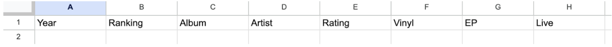
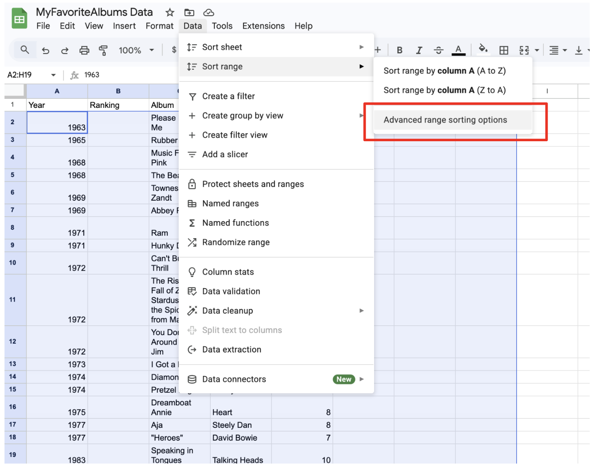
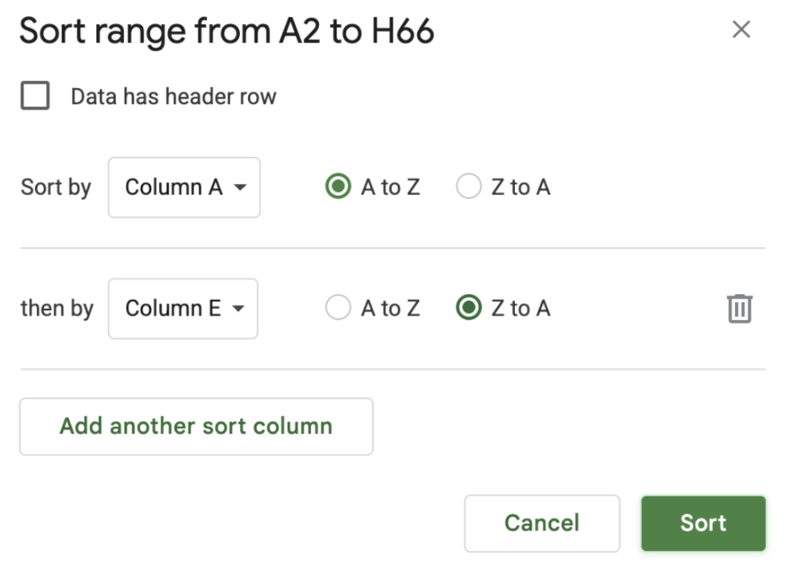
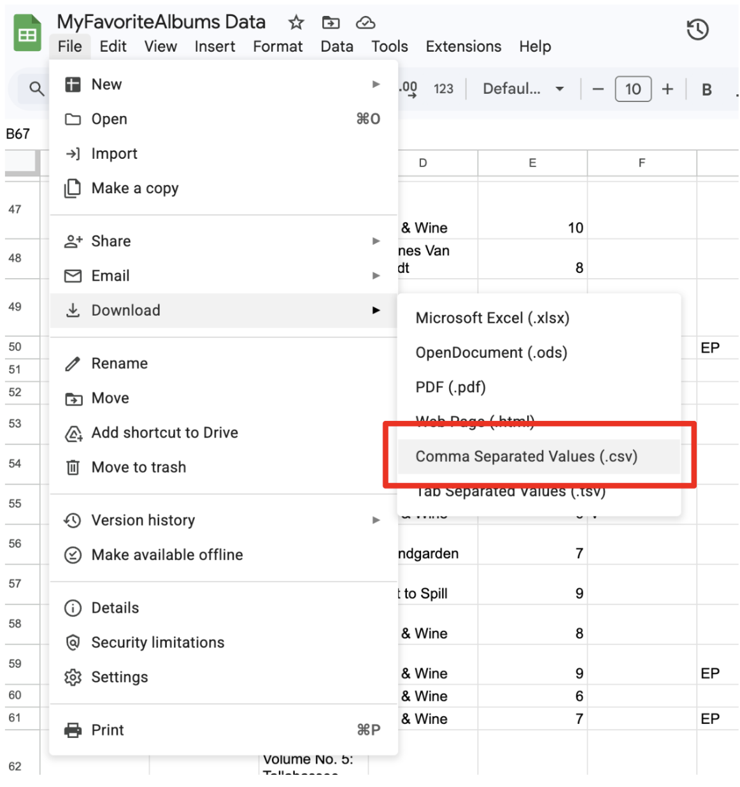
Adding Your Album Information to MyFavoriteAlbums:
Once you have a CSV file containing all of your album rating information downloaded onto your Desktop, you need to add it to MyFavoriteAlbums.
- Open RStudio and navigate to the Files side panel to open the MyFavoriteAlbums folder.
- After clicking on the MyFavoriteAlbums folder, open the Data folder.
- Open up your RStudio terminal by clicking the Terminal tab, and enter the print working directory command (pwd) into your terminal. The pwd command outputs your current location on your computer. Copy the output to use in a later step.
-
Type the change directory command cd .. until you are located on your Desktop.
Your location is noted by [device-name]:Desktop [user]$ on your terminal. -
Move your CSV file to the Data folder in MyFavoriteAlbums by typing the following command into your terminal:
mv [your CSV file name].csv [output copied from step 3]The albums-ranking.csv should now be in the Data folder along with your own CSV file.
-
Open the Data folder and delete the albums-ranking.csv file by selecting the check box next to file name and then clicking
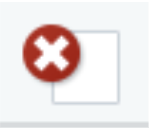
. Select Yes on the Confirm delete pop up. Your data folder should now only contain your music data file. -
While in the /data directory in your terminal, rename the album-ratings.csv file in order for MyFavoriteAlbums to recognize it:
mv [your CSV file name].csv album-ratings.csvYour CSV file should now be renamed to be album-ratings.csv.
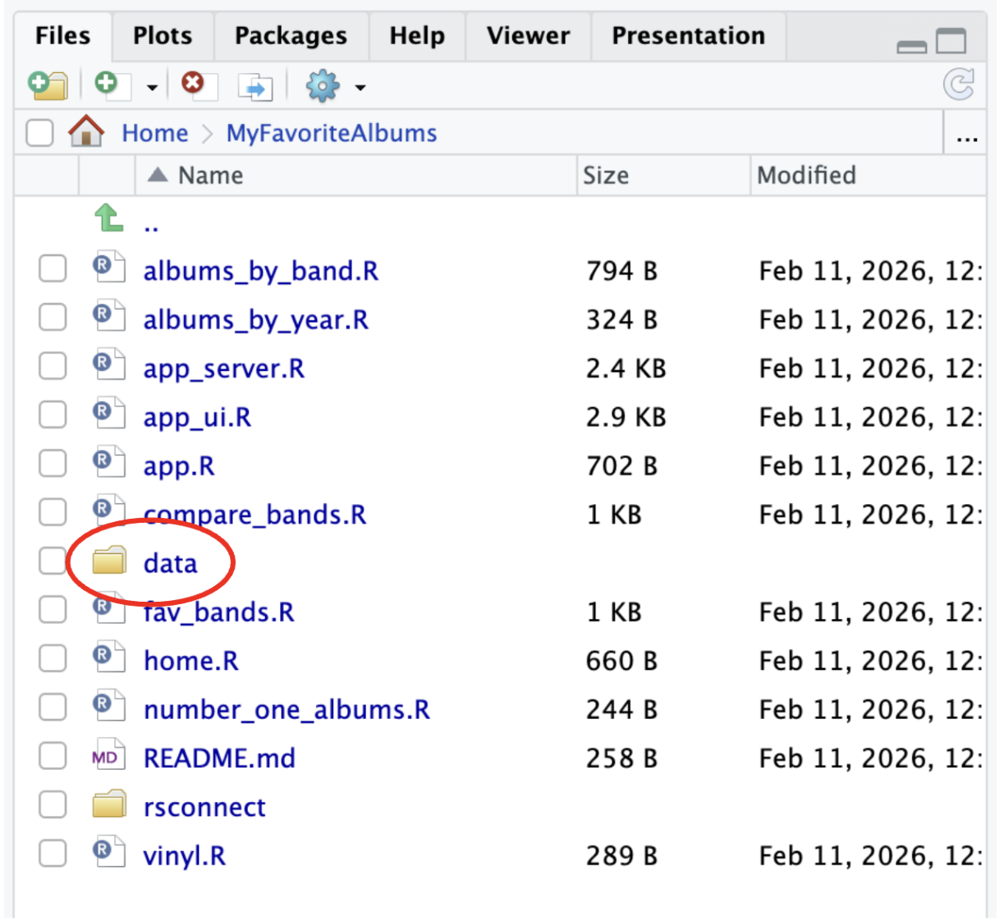
Deploying and Publishing MyFavoriteAlbums:
MyFavoriteAlbums needs to be deployed in order for you to view your music data. Ensure that you have already created a shinyapps account.
Interacting with the Number One Albums Tab:
The Number One Albums tab allows you to view a list of your albums that have the highest rating for each year in an inputted range of years. There is a slider that you can drag to shrink or expand the range of years you wish to see your number one albums for.
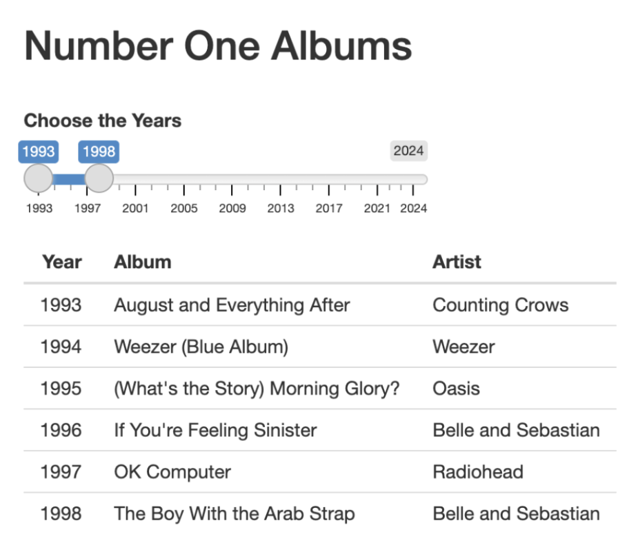
Modifying the Date Range on the Number One Albums Tab:
To modify the range of years on the Number One Albums tab’s slider, open the app_ui.R file in RStudio.
- Locate the following code that generates the UI for the tab. The line starting with sliderInput creates the range of years slider.
- Modify the year range that is displayed on the slider by replacing all instances of 1993 with the release year of your oldest rated album, and replacing all instances of 2024 with the release year of your newest rated album. Also replace 1998 with a year that is between 5-10 years after the release year of your oldest rated album to ensure there is an appropriate default year range.
- To have your changes be reflected in the deployed version of MyFavoriteAlbums, navigate to app.R after saving and click Republish.
htmlOutput("text3"),
sliderInput("rng", "Choose the Years", value = c(1993, 1998), min = 1993, max = 2024, sep = ""),
tableOutput("number_one_table)),
htmlOutput("text3"),
sliderInput("rng", "Choose the Years", value = c(1993, 1998), min = 1993, max = 2024, sep = ""),
tableOutput("number_one_table)),
htmlOutput("text3"),
sliderInput("rng", "Choose the Years", value = c(1963, 1971), min = 1963, max = 2025, sep = ""),
tableOutput("number_one_table)),
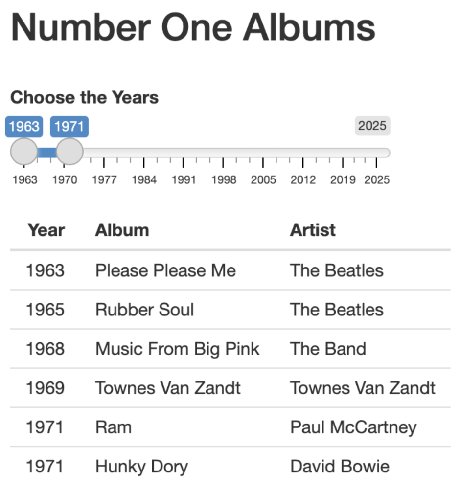
Interacting with the Top Albums By Year Tab:
The Top Albums By Year tab allows you to view a ranked list of all of your albums from a selected release year, with the number one album being the highest rated.
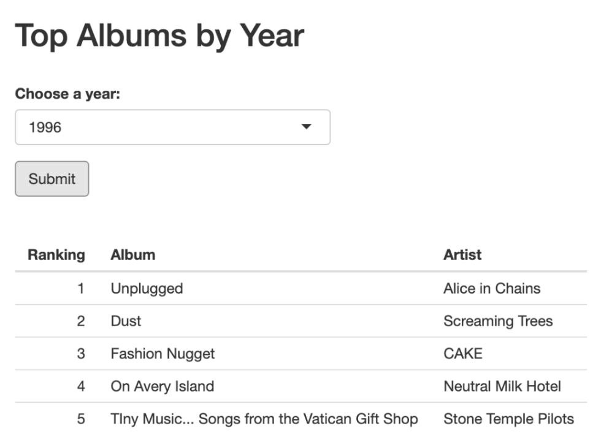
Interacting with the Artists’ Albums Tab:
The Artists’ Albums tab allows you to view a list of information for specified artist’s albums, including the total number of albums you have ranked from the specified artist as well as the average rating of all of the artist’s albums. The output albums are sorted increasingly by their release year.
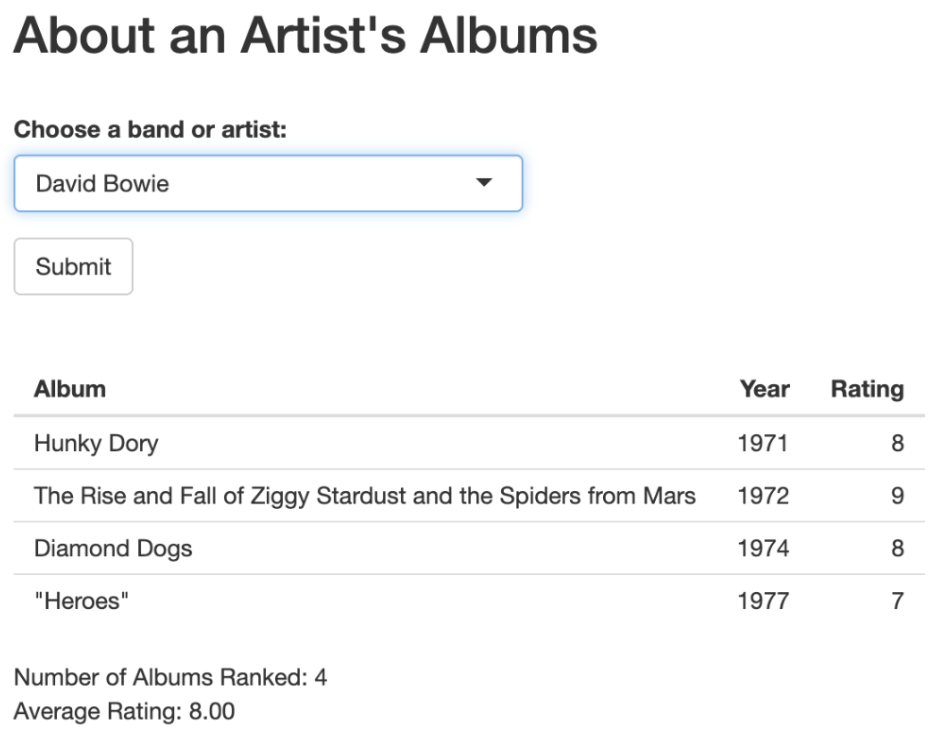
Interacting with the Favorite Artists Tab:
The Favorite Artists tab allows you to view a list of artists with a specified minimum number of albums. You also have the ability to exclude EPs and Live albums from the number of albums artists have. The outputted artists are sorted in decreasing order by their average rating, with the first artist in the list being your highest rated.
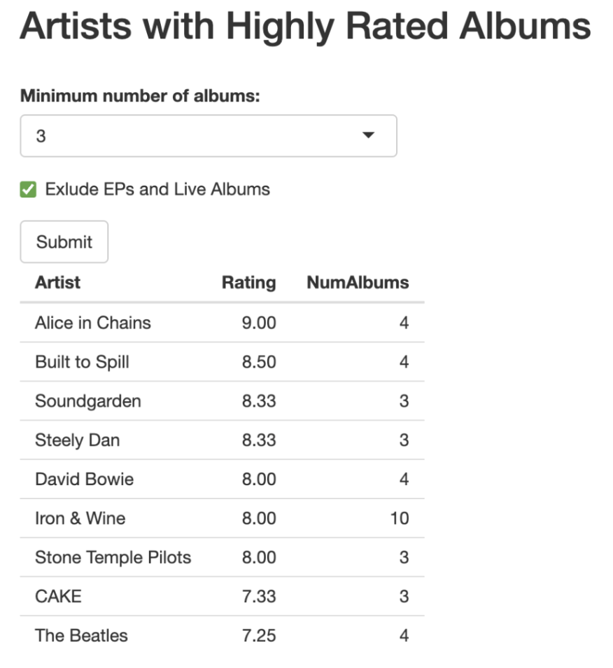
Interacting with the Artist Comparison Tab:
The Artist Comparison tab allows you to compare the album ratings of two selected artists over a range of time. The first artist’s ratings over time is marked with a red line and the second artist’s ratings over time is marked with a blue line.
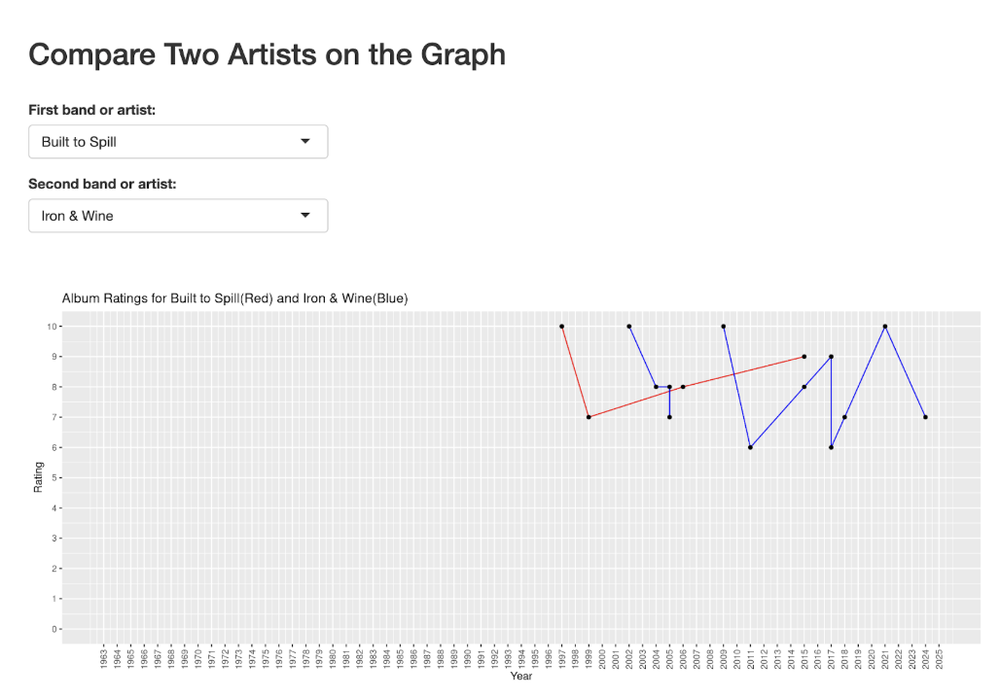
Modifying the Date Range on the Artist Comparison Tab:
To modify the range of years on the Number One Albums tab’s slider, open the compare_bands.R file in RStudio.
- Locate the ggplot() function that creates the plot for this tab.
-
Modify the year range that is displayed on the plot by replacing the values highlighted in yellow
with the release year of your oldest rated album and the values highlighted in pink
with the release year of your newest rated album:
scale_x_continuous(breaks=seq(1993,2024,1))
expand_limits(x=c(1993,2024), y=c(0,10))scale_x_continuous(breaks=seq(1963,2025,1))
expand_limits(x=c(1963,2025), y=c(0,10)) - To have your changes be reflected in the deployed version of MyFavoriteAlbums, navigate to app.R after saving and click Republish.
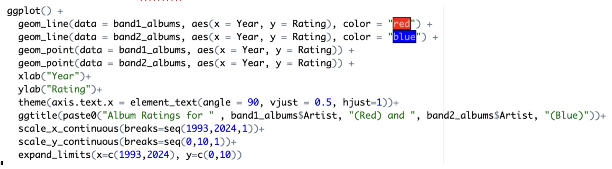
Interacting with the Vinyl Tab:
The Vinyl tab allows you to view your highest rated albums of a specified range that you do not own on vinyl.
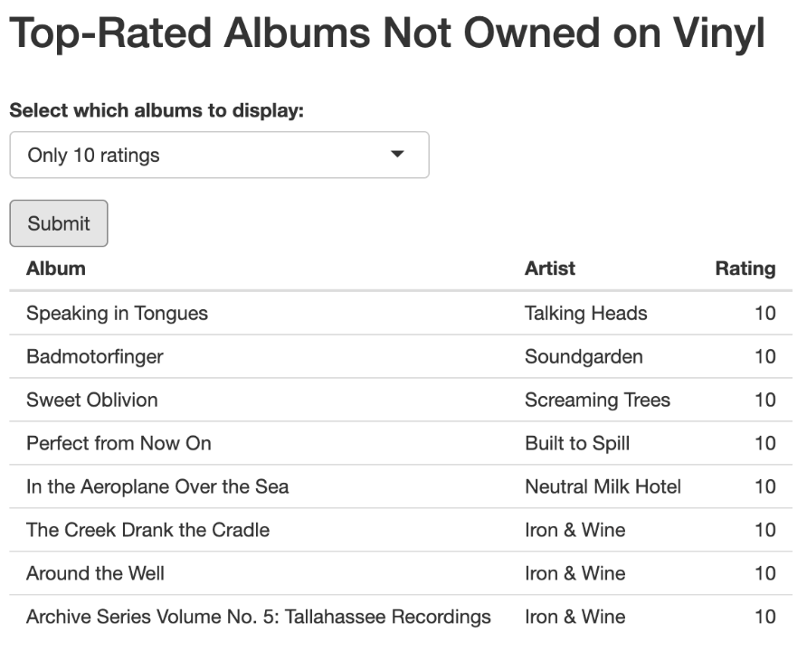